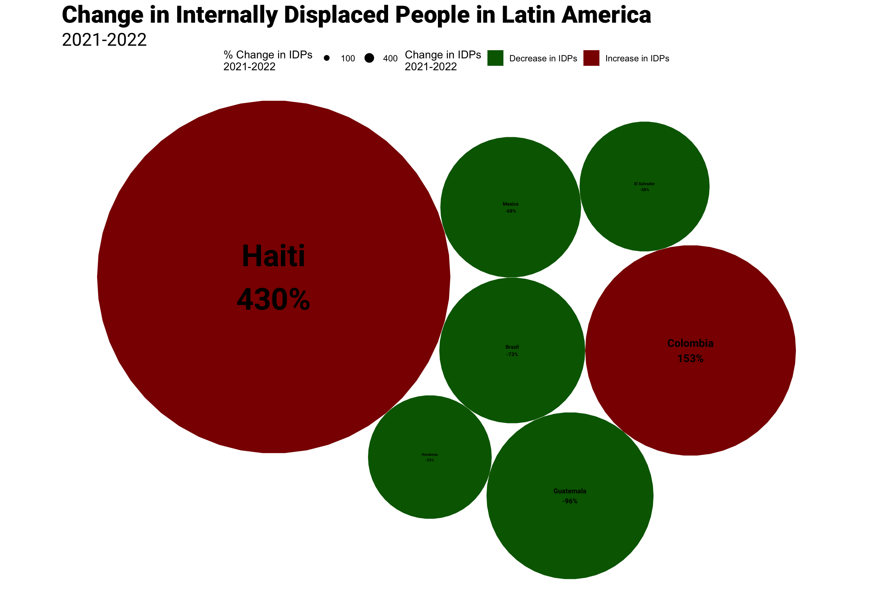

The Human Costs of the Crisis in Haiti
Children around Haiti are supposed to be returning to their classrooms, but there is a problem: the schools are already full. But not of students. As gang violence has caused massive displacement in Haiti, people have flooded schools looking for shelter as refugees in their own country.
The number of Haitians internally displaced due to conflicts rose 430% from 2021 to 2022 -- the largest increase the region has witnessed since data started being collected in 2018. With 106,000 people displaced in 2022, Haiti saw more displacements than much larger countries with potent criminal groups, such as Brazil and Mexico, have suffered in recent years.

This increase bucks the regional trend; most countries in Latin America and the Caribbean saw fewer people internally displaced last year.
The displacements are largely caused by a spike in violence following the assassination of President Jovenel Moïse in July 2021. With the state losing control, gangs, such as 400 Mawozo and G9 and Family (G9 an fanmi – G9) are fighting for territory and trying to intimidate civilians into cooperating.
[QUOTE ON GANG VIOLENCE AND DISPLACEMENT]
Much of the violence is concentrated in Haiti's most underdeveloped areas, such as the Port-au-Prince suburb, Cité Soleil.
Gang Violence in Haiti
But homicides only tell part of the story of the suffering caused by Haiti's criminal takeover. Kidnappings have long been used by gangs to gain ransoms and flex their political influence. Kidnappings have been consistently rising and surged following Moïse's assassination, according to data by the UNODC.
An An Integrated Food Security Phase Classification analysis estimates that 1,807,955 Haitians are experiencing emergency levels of hunger. In areas like Cité Solei, which has become a battleground for gangs , a fifth of the population faces emergency-level starvation, while another 35% face a hunger crisis.
This too has been sparked by the current crisis. Hunger has leveled off before the assassination of Moïse, but has accelerated since.
And despite going three years without a case of cholera, cases began surging again last year. The World Health Organization estimates that there have been almost 60,000 cases of the disease since it reappeared. Cholera is nearly absent from the rest of Latin America and the Caribbean.
The medical crisis is exacerbated by a lack of available medical care. Fearing for their lives amid the gang violence, doctors and patients have abandoned a hospital in Port-au-Prince's Carrefour-Feuilles.
As gangs fight for control, they have turned to the most horrid of tactics. Gangs have begun the “systematic use of rape against women and girls as a weapon of war,” according to the United Nations.
And now, Jimmy Chérizier, alias "Barbecue," G9's leader, has declared his intentions of taking over the country.
Yesterday the gang leader Jimmy 'Barbecue' Chérizier led a demonstration in Port-au-Prince to support the construction of a canal on the Massacre river.
— Diego Da Rin (@diego_darin) September 19, 2023
Ch√©rizier also announced the launch of a campaign to overthrow the Haitian interim govt led by PM @DrArielHenry . üßµ 1/7 pic.twitter.com/k0A8zus04z